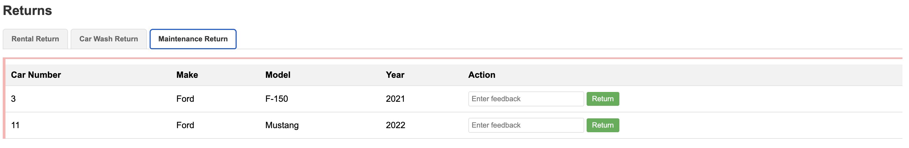

Step 03 - Building Nested Agent Workflows
New Requirement: Comprehensive Car Management
The Miles of Smiles management team wants (again!) a more sophisticated car management system. When cars are returned, the system should automatically:
- Analyze feedback for both cleaning needs AND maintenance requirements
- Route cars appropriately — send to maintenance if needed, otherwise to car wash if needed
- Track all feedback sources — from rentals, car wash, and maintenance teams
- Update car conditions based on all collected feedback
This requires a more complex workflow that can handle parallel analysis and conditional routing.
What You’ll Learn
In this step, you will:
- Build nested workflows, workflows that contain other workflows
- Use parallel workflows to run multiple agents concurrently
- Implement conditional workflows that route execution based on conditions
- Understand activation conditions that control when agents execute
- See how complex agent systems compose from simple building blocks
Understanding Nested Workflows
In Step 02, you built a simple sequence workflow with two agents running one after another. In this step, you’ll build a three-level nested workflow:
graph TD
A[CarProcessingWorkflow<br/>Sequence] --> B[1. FeedbackWorkflow<br/>Parallel]
A --> C[2. ActionWorkflow<br/>Conditional]
A --> D[3. CarConditionFeedbackAgent<br/>Single Agent]
B --> B1[CarWashFeedbackAgent]
B --> B2[MaintenanceFeedbackAgent]
C --> C1{Condition:<br/>Maintenance needed?}
C1 -->|Yes| C2[MaintenanceAgent]
C1 -->|No| C3{Condition:<br/>Car wash needed?}
C3 -->|Yes| C4[CarWashAgent]
C3 -->|No| C5[Skip]The Flow:
- FeedbackWorkflow (Parallel): Analyzes feedback simultaneously from two perspectives:
- Does the car need maintenance?
-
Does the car need washing?
-
ActionWorkflow (Conditional): Routes the car based on the analysis:
- If maintenance needed → send to maintenance team
- Else if washing needed → send to car wash
-
Else → do nothing
-
CarConditionFeedbackAgent (Single): Updates the car’s condition based on all feedback
What Are We Going to Build?

We’ll transform the car management system to handle:
- Three feedback sources: rental returns, car wash returns, maintenance returns
- Parallel analysis: concurrent evaluation for cleaning and maintenance needs
- Conditional routing: intelligent decision-making about where to send each car
- Comprehensive tracking: updated car conditions based on all feedback
Architecture Overview
The Nested Workflow Structure
sequenceDiagram
participant User
participant Main as CarProcessingWorkflow<br/>(Sequence)
participant Feedback as FeedbackWorkflow<br/>(Parallel)
participant Action as ActionWorkflow<br/>(Conditional)
participant Condition as CarConditionFeedbackAgent
participant Scope as AgenticScope
User->>Main: processCarReturn(feedback)
Main->>Scope: Initialize state
Note over Main,Feedback: Step 1: Parallel Analysis
Main->>Feedback: analyzeFeedback()
par Parallel Execution
Feedback->>Scope: CarWashFeedbackAgent<br/>Write: carWashRequest
and
Feedback->>Scope: MaintenanceFeedbackAgent<br/>Write: maintenanceRequest
end
Note over Main,Action: Step 2: Conditional Routing
Main->>Action: processAction()
Action->>Action: Check conditions
alt Maintenance Required
Action->>Scope: MaintenanceAgent executes
else Car Wash Required
Action->>Scope: CarWashAgent executes
else Neither Required
Action->>Action: Skip both agents
end
Note over Main,Condition: Step 3: Update Condition
Main->>Condition: analyzeForCondition()
Condition->>Scope: Write: carCondition
Main->>User: Return CarConditionsPrerequisites
Before starting:
- Completed Step 02 (or have the
section-2/step-02code available) - Application from Step 02 is stopped (Ctrl+C)
Option 1: Continue from Step 02
If you want to continue building on your Step 02 code, copy the updated files:
cd section-2/step-02
cp ../step-03/src/main/resources/static/css/styles.css ./src/main/resources/static/css/styles.css
cp ../step-03/src/main/resources/static/js/app.js ./src/main/resources/static/js/app.js
cp ../step-03/src/main/resources/templates/index.html ./src/main/resources/templates/index.html
cp ../step-03/src/main/resources/import.sql ./src/main/resources/import.sql
cp ../step-03/src/main/java/com/carmanagement/model/CarStatus.java ./src/main/java/com/carmanagement/model/CarStatus.java
cd section-2\step-02
copy ..\step-03\src\main\resources\static\css\styles.css .\src\main\resources\static\css\styles.css
copy ..\step-03\src\main\resources\static\js\app.js .\src\main\resources\static\js\app.js
copy ..\step-03\src\main\resources\templates\index.html .\src\main\resources\templates\index.html
copy ..\step-03\src\main\resources\import.sql .\src\main\resources\import.sql
copy ..\step-03\src\main\java\com\carmanagement\service\CarService.java .\src\main\java\com\carmanagement\service\CarService.java
copy ..\step-03\src\main\java\com\carmanagement\model\CarStatus.java .\src\main\java\com\carmanagement\model\CarStatus.java
Option 2: Start Fresh from Step 03
Navigate to the complete section-2/step-03 directory:
Part 1: Create Feedback Analysis Agents
We need two specialized agents to analyze feedback from different perspectives.
Step 1: Create the MaintenanceFeedbackAgent
This agent determines if a car needs maintenance based on feedback.
In src/main/java/com/carmanagement/agentic/agents, create MaintenanceFeedbackAgent.java:
package com.carmanagement.agentic.agents;
import dev.langchain4j.service.SystemMessage;
import dev.langchain4j.service.UserMessage;
import dev.langchain4j.agentic.Agent;
/**
* Agent that analyzes feedback to determine if maintenance is needed.
*/
public interface MaintenanceFeedbackAgent {
@SystemMessage("""
You are a car maintenance analyzer for a car rental company. Your job is to determine if a car needs maintenance based on feedback.
Analyze the feedback and car information to decide if maintenance is needed.
If the feedback mentions mechanical issues, strange noises, performance problems, or anything that suggests
the car needs maintenance, recommend appropriate maintenance.
Be specific about what type of maintenance is needed (oil change, tire rotation, brake service, engine service, transmission service).
If no service of any kind, repairs or maintenance are needed, respond with
"MAINTENANCE_NOT_REQUIRED".
Include the reason for your choice but keep your response short.
""")
@UserMessage("""
Car Information:
Make: {carMake}
Model: {carModel}
Year: {carYear}
Previous Condition: {carCondition}
Feedback:
Rental Feedback: {rentalFeedback}
Car Wash Feedback: {carWashFeedback}
Maintenance Feedback: {maintenanceFeedback}
""")
@Agent(description = "Car maintenance analyzer. Using feedback, determines if a car needs maintenance.",
outputName = "maintenanceRequest")
String analyzeForMaintenance(
String carMake,
String carModel,
Integer carYear,
Long carNumber,
String carCondition,
String rentalFeedback,
String carWashFeedback,
String maintenanceFeedback);
}
Key Points:
- System message: Focuses on mechanical issues, performance problems, and maintenance needs
- Specific output format: Returns “MAINTENANCE_NOT_REQUIRED” when no maintenance is needed (for easy conditional checking)
- outputName:
"maintenanceRequest"— stores the result in AgenticScope’s state - Three feedback sources: Analyzes rental, car wash, AND maintenance feedback
Step 2: Create the CarWashFeedbackAgent
This agent determines if a car needs washing based on feedback.
In src/main/java/com/carmanagement/agentic/agents, create CarWashFeedbackAgent.java:
package com.carmanagement.agentic.agents;
import dev.langchain4j.service.SystemMessage;
import dev.langchain4j.service.UserMessage;
import dev.langchain4j.agentic.Agent;
/**
* Agent that analyzes feedback to determine if a car wash is needed.
*/
public interface CarWashFeedbackAgent {
@SystemMessage("""
You are a car wash analyzer for a car rental company. Your job is to determine if a car needs washing based on feedback.
Analyze the feedback and car information to decide if a car wash is needed.
If the feedback mentions dirt, mud, stains, or anything that suggests the car is dirty, recommend a car wash.
Be specific about what type of car wash is needed (exterior, interior, detailing, waxing).
If no interior or exterior car cleaning services are needed based on the feedback, respond with "CARWASH_NOT_REQUIRED".
Include the reason for your choice but keep your response short.
""")
@UserMessage("""
Car Information:
Make: {carMake}
Model: {carModel}
Year: {carYear}
Previous Condition: {carCondition}
Feedback:
Rental Feedback: {rentalFeedback}
Car Wash Feedback: {carWashFeedback}
Maintenance Feedback: {maintenanceFeedback}
""")
@Agent(description = "Car wash analyzer. Using feedback, determines if a car wash is needed.",
outputName = "carWashRequest")
String analyzeForCarWash(
String carMake,
String carModel,
Integer carYear,
Long carNumber,
String carCondition,
String rentalFeedback,
String carWashFeedback,
String maintenanceFeedback);
}
Key Points:
- System message: Focuses on cleanliness issues — dirt, stains, smells
- Specific output format: Returns “CARWASH_NOT_REQUIRED” when no washing is needed
- outputName:
"carWashRequest"— stores the result in AgenticScope’s state - Same inputs: Also analyzes all three feedback sources
Part 2: Create the Parallel Feedback Workflow
Now we’ll create a workflow that runs both feedback agents concurrently.
Step 3: Create the FeedbackWorkflow
In src/main/java/com/carmanagement/agentic/workflow, create FeedbackWorkflow.java:
package com.carmanagement.agentic.workflow;
import com.carmanagement.agentic.agents.CarWashFeedbackAgent;
import com.carmanagement.agentic.agents.MaintenanceFeedbackAgent;
import dev.langchain4j.agentic.Agent;
import dev.langchain4j.agentic.declarative.ParallelAgent;
import dev.langchain4j.agentic.declarative.SubAgent;
/**
* Workflow for processing car feedback in parallel.
*/
public interface FeedbackWorkflow {
/**
* Runs multiple feedback agents in parallel to analyze different aspects of car feedback.
*/
@Agent(outputName = "feedbackResult")
@ParallelAgent(outputName = "feedbackResult", subAgents = {
@SubAgent(type = CarWashFeedbackAgent.class, outputName = "carWashRequest"),
@SubAgent(type = MaintenanceFeedbackAgent.class, outputName = "maintenanceRequest")
})
String analyzeFeedback(
String carMake,
String carModel,
Integer carYear,
Long carNumber,
String carCondition,
String rentalFeedback,
String carWashFeedback,
String maintenanceFeedback);
}
Let’s break it down:
@ParallelAgent Annotation
@ParallelAgent(
outputName = "feedbackResult",
subAgents = {
@SubAgent(type = CarWashFeedbackAgent.class, outputName = "carWashRequest"),
@SubAgent(type = MaintenanceFeedbackAgent.class, outputName = "maintenanceRequest")
}
)
This defines a parallel workflow:
- Both agents execute concurrently
- Improves performance, no waiting for one to finish before the other starts
- Each agent has its own
outputNameto store results independently
Why Parallel Here?
The two feedback agents analyze different aspects (cleaning vs. maintenance) and don’t depend on each other. Running them in parallel cuts the total execution time roughly in half!
Part 3: Create Action Agents
We need agents that can actually request maintenance and car washes.
Step 4: Create the MaintenanceAgent
This agent uses a tool to request maintenance services.
In src/main/java/com/carmanagement/agentic/agents, create MaintenanceAgent.java:
package com.carmanagement.agentic.agents;
import com.carmanagement.agentic.tools.MaintenanceTool;
import dev.langchain4j.service.SystemMessage;
import dev.langchain4j.service.UserMessage;
import dev.langchain4j.agentic.Agent;
import io.quarkiverse.langchain4j.ToolBox;
/**
* Agent that determines what maintenance services to request.
*/
public interface MaintenanceAgent {
@SystemMessage("""
You handle intake for the car maintenance department of a car rental company.
It is your job to submit a request to the provided requestMaintenance function to take action on the maintenance request.
Be specific about what services are needed based on the maintenance request.
""")
@UserMessage("""
Car Information:
Make: {carMake}
Model: {carModel}
Year: {carYear}
Car Number: {carNumber}
Maintenance Request:
{maintenanceRequest}
""")
@Agent(description = "Car maintenance specialist. Using car information and request, determines what maintenance services are needed.",
outputName = "maintenanceAgentResult")
@ToolBox(MaintenanceTool.class)
String processMaintenance(
String carMake,
String carModel,
Integer carYear,
Long carNumber,
String maintenanceRequest);
}
Key Points:
- Input:
maintenanceRequest— reads the output fromMaintenanceFeedbackAgent - Tool:
MaintenanceTool— can request oil changes, brake service, etc. - System message: Interprets the maintenance request and calls the appropriate tool
Step 5: Update the CarWashAgent
The CarWashAgent needs to read from the CarWashFeedbackAgent’s output.
Update src/main/java/com/carmanagement/agentic/agents/CarWashAgent.java:
package com.carmanagement.agentic.agents;
import com.carmanagement.agentic.tools.CarWashTool;
import dev.langchain4j.service.SystemMessage;
import dev.langchain4j.service.UserMessage;
import dev.langchain4j.agentic.Agent;
import io.quarkiverse.langchain4j.ToolBox;
/**
* Agent that determines what car wash services to request.
*/
public interface CarWashAgent {
@SystemMessage("""
You handle intake for the car wash department of a car rental company.
""")
@UserMessage("""
Taking into account all provided feedback, determine if the car needs a car wash.
If the feedback indicates the car is dirty, has stains, or any other cleanliness issues,
call the provided tool and recommend appropriate car wash services (exterior wash, interior cleaning, waxing, detailing).
Be specific about what services are needed.
If no specific car wash request is provided, request a standard exterior wash.
Car Information:
Make: {carMake}
Model: {carModel}
Year: {carYear}
Car Number: {carNumber}
Car Wash Request:
{carWashRequest}
""")
@Agent(description = "Car wash specialist. Determines what car wash services are needed.",
outputName = "carWashAgentResult")
@ToolBox(CarWashTool.class)
String processCarWash(
String carMake,
String carModel,
Integer carYear,
Long carNumber,
String carWashRequest);
}
Key change:
Now takes carWashRequest as input (instead of analyzing raw feedback itself).
This follows the separation of concerns principle:
- Feedback agents: Analyze and decide
- Action agents: Execute based on decisions
Part 4: Create the Conditional Action Workflow
Now we’ll create a workflow that conditionally executes agents based on the feedback analysis.
Step 6: Create the ActionWorkflow
In src/main/java/com/carmanagement/agentic/workflow, create ActionWorkflow.java:
package com.carmanagement.agentic.workflow;
import com.carmanagement.agentic.agents.CarWashAgent;
import com.carmanagement.agentic.agents.MaintenanceAgent;
import dev.langchain4j.agentic.declarative.ActivationCondition;
import dev.langchain4j.agentic.declarative.ConditionalAgent;
import dev.langchain4j.agentic.declarative.SubAgent;
/**
* Workflow for processing car actions conditionally.
*/
public interface ActionWorkflow {
/**
* Runs the appropriate action agent based on the feedback analysis.
*/
@ConditionalAgent(outputName = "actionResult", subAgents = {
@SubAgent(type = MaintenanceAgent.class, outputName = "actionResult"),
@SubAgent(type = CarWashAgent.class, outputName = "actionResult")
})
String processAction(
String carMake,
String carModel,
Integer carYear,
Long carNumber,
String carCondition,
String carWashRequest,
String maintenanceRequest);
@ActivationCondition(MaintenanceAgent.class)
static boolean activateMaintenance(String maintenanceRequest) {
return isRequired(maintenanceRequest);
}
@ActivationCondition(CarWashAgent.class)
static boolean activateCarWash(String carWashRequest) {
return isRequired(carWashRequest);
}
private static boolean isRequired(String value) {
return value != null && !value.isEmpty() && !value.toUpperCase().contains("NOT_REQUIRED");
}
}
Let’s break it down:
@ConditionalAgent Annotation
@ConditionalAgent(
outputName = "actionResult",
subAgents = {
@SubAgent(type = MaintenanceAgent.class, outputName = "actionResult"),
@SubAgent(type = CarWashAgent.class, outputName = "actionResult")
}
)
A conditional workflow is a sequence where each agent only runs if its condition is met.
@ActivationCondition Methods
@ActivationCondition(MaintenanceAgent.class)
static boolean activateMaintenance(String maintenanceRequest) {
return isRequired(maintenanceRequest);
}
@ActivationCondition(CarWashAgent.class)
static boolean activateCarWash(String carWashRequest) {
return isRequired(carWashRequest);
}
These methods control when each agent executes:
activateMaintenance: Returnstrueif maintenance is neededactivateCarWash: Returnstrueif car wash is needed
This logic is defined in the isRequired method:
private static boolean isRequired(String value) {
return value != null && !value.isEmpty() && !value.toUpperCase().contains("NOT_REQUIRED");
}
The parameters are automatically extracted from AgenticScope’s state by name.
Execution Logic
if (activateMaintenance(maintenanceRequest) == true)
→ Execute MaintenanceAgent
→ Skip CarWashAgent (regardless of its condition)
else if (activateCarWash(carWashRequest) == true)
→ Execute CarWashAgent
else
→ Skip both agents
This implements priority routing: maintenance takes precedence over car wash.
Part 5: Update the Car Condition Agent
Step 7: Update CarConditionFeedbackAgent
The condition agent should now use the analyzed requests instead of raw feedback.
Update src/main/java/com/carmanagement/agentic/agents/CarConditionFeedbackAgent.java:
@UserMessage("""
Car Information:
Make: {carMake}
Model: {carModel}
Year: {carYear}
Previous Condition: {carCondition}
Feedback from other agents:
Car Wash Recommendation: {carWashRequest}
Maintenance Recommendation: {maintenanceRequest}
""")
@Agent(description = "Car condition analyzer. Determines the current condition of a car based on feedback.",
outputName = "carCondition")
String analyzeForCondition(
String carMake,
String carModel,
Integer carYear,
Long carNumber,
String carCondition,
String carWashRequest,
String maintenanceRequest);
Key changes:
- Now takes
carWashRequestandmaintenanceRequestas inputs - Uses the analyzed requests (which include reasoning) to determine condition
- More accurate condition updates based on professional analysis
Part 6: Create Supporting Infrastructure
Step 8: Create the MaintenanceTool
In src/main/java/com/carmanagement/agentic/tools, create MaintenanceTool.java:
package com.carmanagement.agentic.tools;
import com.carmanagement.model.CarInfo;
import com.carmanagement.model.CarStatus;
import dev.langchain4j.agent.tool.Tool;
import jakarta.enterprise.context.Dependent;
import jakarta.transaction.Transactional;
/**
* Tool for requesting car maintenance operations.
*/
@Dependent
public class MaintenanceTool {
/**
* Requests maintenance for a car based on the provided parameters.
*
* @param carNumber The car number
* @param carMake The car make
* @param carModel The car model
* @param carYear The car year
* @param oilChange Whether to request an oil change
* @param tireRotation Whether to request tire rotation
* @param brakeService Whether to request brake service
* @param engineService Whether to request engine service
* @param transmissionService Whether to request transmission service
* @param requestText The maintenance request text
* @return A summary of the maintenance request
*/
@Tool("Requests maintenance with the specified options")
@Transactional
public String requestMaintenance(
Long carNumber,
String carMake,
String carModel,
Integer carYear,
boolean oilChange,
boolean tireRotation,
boolean brakeService,
boolean engineService,
boolean transmissionService,
String requestText) {
// In a more elaborate implementation, we might make an API call to a maintenance service here
// Update car status to IN_MAINTENANCE
CarInfo carInfo = CarInfo.findById(carNumber);
if (carInfo != null) {
carInfo.status = CarStatus.IN_MAINTENANCE;
carInfo.persist();
}
StringBuilder summary = new StringBuilder();
summary.append("Maintenance requested for ").append(carMake).append(" ")
.append(carModel).append(" (").append(carYear).append("), Car #")
.append(carNumber).append(":\n");
if (oilChange) {
summary.append("- Oil change\n");
}
if (tireRotation) {
summary.append("- Tire rotation\n");
}
if (brakeService) {
summary.append("- Brake service\n");
}
if (engineService) {
summary.append("- Engine service\n");
}
if (transmissionService) {
summary.append("- Transmission service\n");
}
if (requestText != null && !requestText.isEmpty()) {
summary.append("Additional notes: ").append(requestText);
}
String result = summary.toString();
System.out.println("MaintenanceTool result: " + result);
return result;
}
}
Similar to CarWashTool, this tool:
- Uses
@Dependentscope (required for tool detection) - Provides maintenance options: oil change, tire rotation, brake service, etc.
- Updates car status to
IN_MAINTENANCE - Returns a summary of requested services
Step 9: Create the RequiredAction Model
We need a model to represent what action is required for a car.
In src/main/java/com/carmanagement/model, create RequiredAction.java:
package com.carmanagement.model;
/**
* Enum representing the type of possible required actions for car processing
*/
public enum RequiredAction {
MAINTENANCE,
CAR_WASH,
NONE
}
Step 10: Update the CarConditions Model
Update src/main/java/com/carmanagement/model/CarConditions.java:
package com.carmanagement.model;
public record CarConditions(String generalCondition, RequiredAction requiredAction) {
}
boolean carWashRequired to RequiredAction requiredAction to support three states.
Step 11: Add Maintenance Returns API
Update src/main/java/com/carmanagement/resource/CarManagementResource.java:
/**
* Process a car return from maintenance.
*
* @param carNumber The car number
* @param maintenanceFeedback Optional maintenance feedback
* @return Result of the processing
*/
@POST
@Path("/maintenance-return/{carNumber}")
public Response processMaintenanceReturn(Long carNumber, @RestQuery String maintenanceFeedback) {
try {
String result = carManagementService.processCarReturn(carNumber, "", "", maintenanceFeedback);
return Response.ok(result).build();
} catch (Exception e) {
return Response.status(Response.Status.INTERNAL_SERVER_ERROR)
.entity("Error processing maintenance return: " + e.getMessage())
.build();
}
}
This adds a new endpoint for the maintenance team to return cars with feedback.
Part 7: Update the Main Workflow
Step 12: Update CarProcessingWorkflow
This is where everything comes together! Update the workflow to use nested workflows.
Update src/main/java/com/carmanagement/agentic/workflow/CarProcessingWorkflow.java:
package com.carmanagement.agentic.workflow;
import com.carmanagement.agentic.agents.CarConditionFeedbackAgent;
import com.carmanagement.model.CarConditions;
import com.carmanagement.model.RequiredAction;
import dev.langchain4j.agentic.declarative.Output;
import dev.langchain4j.agentic.declarative.SequenceAgent;
import dev.langchain4j.agentic.declarative.SubAgent;
/**
* Workflow for processing car returns using a sequence of agents.
*/
public interface CarProcessingWorkflow {
/**
* Processes a car return by running feedback analysis and then appropriate actions.
*/
@SequenceAgent(outputName = "carProcessingAgentResult", subAgents = {
@SubAgent(type = FeedbackWorkflow.class, outputName = "carProcessingAgentResult"),
@SubAgent(type = ActionWorkflow.class, outputName = "carProcessingAgentResult"),
@SubAgent(type = CarConditionFeedbackAgent.class, outputName = "carProcessingAgentResult")
})
CarConditions processCarReturn(
String carMake,
String carModel,
Integer carYear,
Long carNumber,
String carCondition,
String rentalFeedback,
String carWashFeedback,
String maintenanceFeedback);
@Output
static CarConditions output(String carCondition, String maintenanceRequest, String carWashRequest) {
RequiredAction requiredAction;
// Check maintenance first (higher priority)
if (isRequired(maintenanceRequest)) {
requiredAction = RequiredAction.MAINTENANCE;
} else if (isRequired(carWashRequest)) {
requiredAction = RequiredAction.CAR_WASH;
} else {
requiredAction = RequiredAction.NONE;
}
return new CarConditions(carCondition, requiredAction);
}
private static boolean isRequired(String value) {
return value != null && !value.isEmpty() && !value.toUpperCase().contains("NOT_REQUIRED");
}
}
Let’s break it down:
The Sequence
@SequenceAgent(outputName = "carProcessingAgentResult", subAgents = {
@SubAgent(type = FeedbackWorkflow.class, outputName = "carProcessingAgentResult"),
@SubAgent(type = ActionWorkflow.class, outputName = "carProcessingAgentResult"),
@SubAgent(type = CarConditionFeedbackAgent.class, outputName = "carProcessingAgentResult")
})
Notice the subagents include workflows (FeedbackWorkflow, ActionWorkflow), not just agents!
This is workflow composition: workflows can contain other workflows.
The Execution Order
- FeedbackWorkflow (parallel): Analyzes feedback for both maintenance and car wash needs
- ActionWorkflow (conditional): Routes the car to maintenance or car wash based on analysis
- CarConditionFeedbackAgent (single): Updates the car’s overall condition
The @Output Method
@Output
static CarConditions output(String carCondition, String maintenanceRequest, String carWashRequest) {
RequiredAction requiredAction;
if (isRequired(maintenanceRequest)) {
requiredAction = RequiredAction.MAINTENANCE;
} else if (isRequired(carWashRequest)) {
requiredAction = RequiredAction.CAR_WASH;
} else {
requiredAction = RequiredAction.NONE;
}
return new CarConditions(carCondition, requiredAction);
}
This static method extracts three values from AgenticScope’s state and combines them into the final result.
Part 8: Update the Service Layer
Step 13: Update CarManagementService
And to get things over the finish line, we need to update the car management service to handle the new workflow structure.
Update src/main/java/com/carmanagement/service/CarManagementService.java:
package com.carmanagement.service;
import com.carmanagement.agentic.workflow.CarProcessingWorkflow;
import com.carmanagement.model.CarConditions;
import com.carmanagement.model.CarInfo;
import com.carmanagement.model.CarStatus;
import com.carmanagement.model.RequiredAction;
import jakarta.enterprise.context.ApplicationScoped;
import jakarta.inject.Inject;
import jakarta.transaction.Transactional;
/**
* Service for managing car returns from various operations.
*/
@ApplicationScoped
public class CarManagementService {
@Inject
CarProcessingWorkflow carProcessingWorkflow;
/**
* Process a car return from any operation.
*
* @param carNumber The car number
* @param rentalFeedback Optional rental feedback
* @param carWashFeedback Optional car wash feedback
* @param maintenanceFeedback Optional maintenance feedback
* @return Result of the processing
*/
@Transactional
public String processCarReturn(Long carNumber, String rentalFeedback, String carWashFeedback, String maintenanceFeedback) {
CarInfo carInfo = CarInfo.findById(carNumber);
if (carInfo == null) {
return "Car not found with number: " + carNumber;
}
// Process the car return using the workflow and get the AgenticScope
CarConditions carConditions = carProcessingWorkflow.processCarReturn(
carInfo.make,
carInfo.model,
carInfo.year,
carNumber,
carInfo.condition,
rentalFeedback != null ? rentalFeedback : "",
carWashFeedback != null ? carWashFeedback : "",
maintenanceFeedback != null ? maintenanceFeedback : "");
// Update the car's condition with the result from CarConditionFeedbackAgent
carInfo.condition = carConditions.generalCondition();
// If no action is required, then the car should be available for the next rental
if (carConditions.requiredAction() == RequiredAction.NONE) {
carInfo.status = CarStatus.AVAILABLE;
}
// Persist the changes to the database
carInfo.persist();
return carConditions.generalCondition();
}
}
Key changes:
- Now passes
maintenanceFeedbackparameter to the workflow - Uses
RequiredActionenum to determine car status - Sets status to
IN_MAINTENANCEorAT_CAR_WASHbased on the required action
Try It Out
Start the application:
Open http://localhost:8080.
Notice the New UI
The Returns section now has a Maintenance Return tab:

Test the Complete Workflow
Enter feedback on the Maintenance Return tab for car 3:
Click Return.
What happens?
- Parallel Analysis (FeedbackWorkflow):
MaintenanceFeedbackAgent: “MAINTENANCE_NOT_REQUIRED” (scratch fixed)-
CarWashFeedbackAgent: “Car wash needed for general cleaning” -
Conditional Routing (ActionWorkflow):
- Maintenance condition:
false(not required) - Car wash condition:
true(required) -
→ Executes
CarWashAgent, sends car to car wash -
Condition Update (CarConditionFeedbackAgent):
-
Updates car condition: “Scratch removed, clean overall”
-
UI Update:
- Car status →
AT_CAR_WASH - Condition column updates
Check the Logs
Look for evidence of parallel execution:
[MaintenanceFeedbackAgent] MAINTENANCE_NOT_REQUIRED - Scratch has been repaired
[CarWashFeedbackAgent] Recommend exterior wash and interior cleaning
🚗 CarWashTool result: Car wash requested for Honda Civic (2020), Car #3:
- Exterior wash
- Interior cleaning
[CarConditionFeedbackAgent] Good condition, scratch repaired, recently cleaned
Notice how both feedback agents’ responses appear close together in time (parallel execution)!
How It All Works Together
Let’s trace a complete example with maintenance needed:
Example: “Strange engine noise”
sequenceDiagram
participant User
participant Main as CarProcessingWorkflow
participant Feedback as FeedbackWorkflow
participant Action as ActionWorkflow
participant Scope as AgenticScope State
User->>Main: Return car with feedback
Main->>Scope: Store: rentalFeedback="Engine knocking"
rect rgb(255, 243, 205)
Note over Main,Feedback: Parallel Workflow
Main->>Feedback: Execute
par
Feedback->>Scope: MaintenanceFeedbackAgent<br/>Write: "Engine service needed - knocking sound"
and
Feedback->>Scope: CarWashFeedbackAgent<br/>Write: "CARWASH_NOT_REQUIRED"
end
end
rect rgb(248, 215, 218)
Note over Main,Action: Conditional Workflow
Main->>Action: Execute
Action->>Scope: Read: maintenanceRequest, carWashRequest
Action->>Action: activateMaintenance() = true
Action->>Scope: MaintenanceAgent executes<br/>Write: "Maintenance requested: engine service"
Note over Action: CarWashAgent skipped (condition false)
end
Main->>Scope: CarConditionFeedbackAgent<br/>Write: "Requires engine inspection"
Main->>Main: @Output combines results
Main->>User: CarConditions(condition="Requires engine inspection", action=MAINTENANCE)Understanding Workflow Composition
The power of this system comes from composability — complex workflows built from simple pieces. We keep control on the flow, while letting agents focus on their specific tasks.
Building Blocks
| Component | Type | Purpose |
|---|---|---|
CarWashFeedbackAgent |
Agent | Analyzes cleaning needs |
MaintenanceFeedbackAgent |
Agent | Analyzes maintenance needs |
FeedbackWorkflow |
Parallel Workflow | Runs both analyses concurrently |
CarWashAgent |
Agent | Requests car washing |
MaintenanceAgent |
Agent | Requests maintenance |
ActionWorkflow |
Conditional Workflow | Routes to appropriate action |
CarConditionFeedbackAgent |
Agent | Updates car condition |
CarProcessingWorkflow |
Sequence Workflow | Orchestrates everything |
Composition Hierarchy
CarProcessingWorkflow (Sequence)
├── FeedbackWorkflow (Parallel)
│ ├── CarWashFeedbackAgent
│ └── MaintenanceFeedbackAgent
├── ActionWorkflow (Conditional)
│ ├── MaintenanceAgent (with MaintenanceTool)
│ └── CarWashAgent (with CarWashTool)
└── CarConditionFeedbackAgent
This is a three-level nested workflow!
Key Takeaways
- Workflows compose: Build complex systems by nesting simple workflows
- Parallel workflows improve response time: Independent tasks run concurrently
- Conditional workflows enable routing: Execute different paths based on runtime conditions
- Activation conditions are powerful: Control agent execution with simple boolean logic
- Separation of concerns: Analysis agents separate from action agents for clarity
- Type safety throughout: Compile-time checks on the entire workflow structure
Experiment Further
1. Add Priority Levels
What if you wanted to add a third level of priority (e.g., emergency repairs)?
- Add an
EmergencyRepairFeedbackAgent - Update
ActionWorkflowwith a third condition - Ensure emergency repairs take highest priority
2. Make Feedback Analysis Sequential
Try changing FeedbackWorkflow from @ParallelAgent to @SequenceAgent. How does this affect performance? When might you want sequential analysis?
3. Add More Sophisticated Conditions
The ActionWorkflow currently uses simple isRequired() checks. Try adding:
- Cost-based conditions (only send to maintenance if estimated cost < $500)
- Time-based conditions (skip car wash if it was washed in last 24 hours)
- Severity-based conditions (emergency repairs vs. routine maintenance)
4. Visualize the Workflow
Add logging to each agent and workflow to print when they start and finish. Observe the parallel execution in the logs!
Troubleshooting
Parallel agents not executing in parallel
Check that your system has multiple CPU cores and that the thread pool is configured properly. In development mode, Quarkus should handle this automatically.
Conditional workflow always/never executing certain agents
- Verify your
@ActivationConditionmethods are correctly named - Check that parameter names match the
outputNamevalues exactly - Add logging to the condition methods to see what values they’re receiving
Error: Cannot find symbol ‘RequiredAction’
Make sure you created both:
- The
RequiredActionenum - Updated
CarConditionsto use it
Agents getting wrong input values
Remember that parameter names must match the outputName from previous agents or workflow inputs. Check for typos!
What’s Next?
You’ve built a sophisticated multi-level nested workflow combining sequence, parallel, and conditional execution!
In Step 04, you’ll learn about Agent-to-Agent (A2A) communication — connecting your workflows to remote agents running in separate systems!